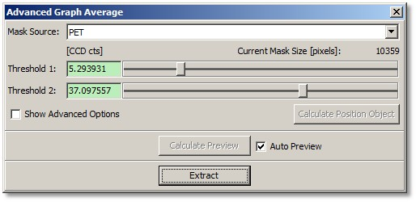
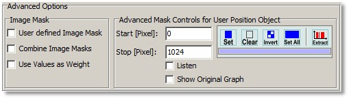
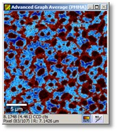
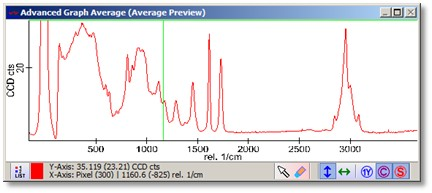

|
描述
使用此对话框，可以使用阈值创建图像掩模，并实时计算结果掩模的平均光谱。
另请参阅
输入与结果
输入：
结果：
每个掩模对象一个平均光谱。
用户界面

掩模源（组合框）：
您可以切换到每个放置的图像，以使用阈值创建掩模。
阈值 1/2（浮点编辑框和滑块）：
这两个阈值将定义图像掩模。如果像素值在两个阈值的范围内，则该图像像素被标记。
计算位置对象（按钮）：
使用图谱预览掩模中所有像素的总和计算新的图像对象。该图像可用于使用阈值定义掩模。此按钮仅在"掩模源"设置为"用户位置对象"时启用。
计算预览（按钮）：
如果启用了"自动预览"，则一次性计算预览平均光谱。
自动预览（复选框）：
开启或关闭自动预览平均光谱计算。对于非常大的数据集，此功能会自动关闭，您必须按下"计算预览"按钮才能看到预览平均光谱。
提取（按钮）：
提取平均光谱，每个掩模/附加图像一个。
显示高级选项（复选框）：
显示高级选项：

用户定义图像掩模（复选框）：
如果勾选，阈值编辑/滑块将被禁用。如果用户在图像查看器预览窗口中使用图像查看器绘制工具更改图像掩模，将自动勾选。此行为将防止用户意外破坏用户定义的掩模。如果用户取消勾选该复选框，则使用阈值来覆盖当前掩模。
组合图像掩模（复选框）：
如果勾选，所有附加图像的所有掩模将使用 AND 操作进行组合。
使用值作为权重（复选框）：
如果勾选，图像掩模将被忽略；而是图像值本身定义平均过程中每个光谱的权重因子。
用户位置对象的高级掩模控件：
这些编辑是可选的。您可以在图谱预览窗口中定义掩模以创建用户位置对象（求和图像）。如果您没有任何图像且仅向此对话框放置了图谱对象，这会很有意义。勾选"显示原始图谱"复选框以查看用于定义掩模的有效光谱。
预览窗口


图像查看器显示当前选定的图像及其掩模。图谱查看器显示使用当前图像掩模计算的平均光谱预览。也可以在图谱查看器中定义光谱掩模，以创建用于掩模创建的用户定义位置对象（例如求和图像）。